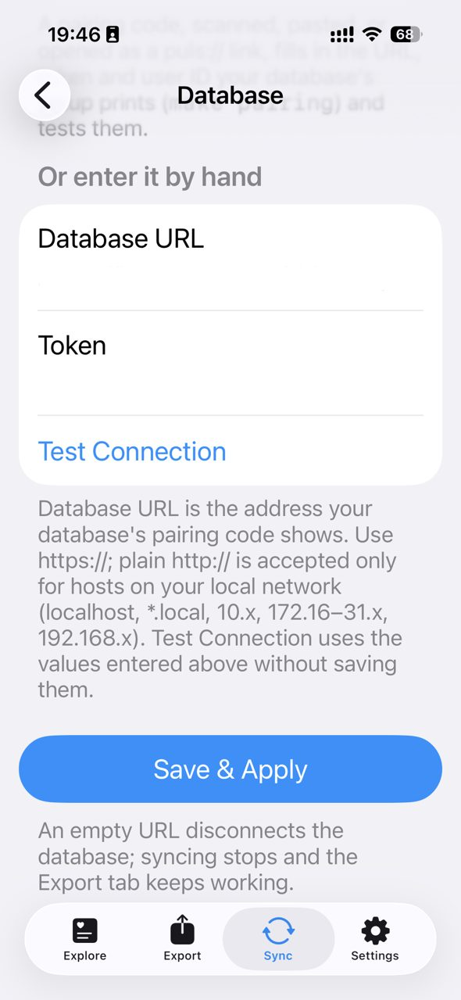
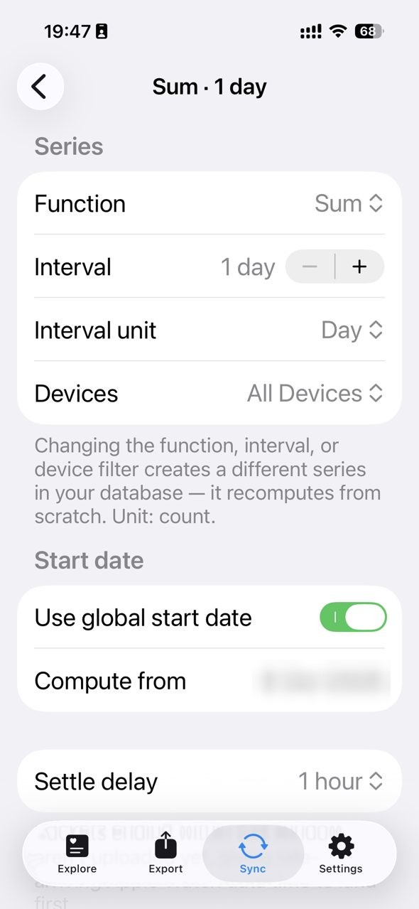
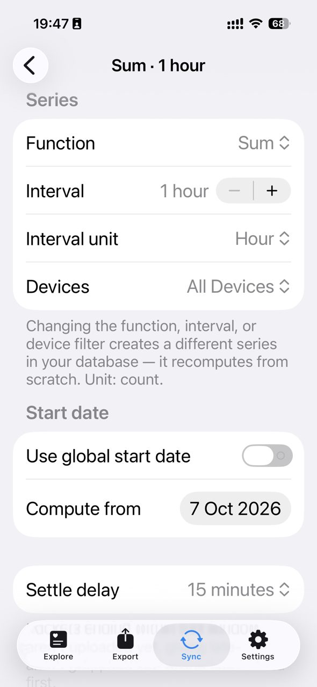

Pulse Relay
一个小小的 Python 服务器：接收 Apple Watch 的健康数据，存进 SQLite，再把精简摘要交给 AI。
A small Python server that takes Apple Watch health data, stores it in one SQLite file, and passes short summaries to the AIs.
Apple Watch / iPhone (HealthKit)
│
▼
PulsHealth app
│ HTTPS · bearer token · gzip NDJSON (Puls Sync v1)
▼
Caddy only /api/health-sync/* is public
│
▼
server.py 127.0.0.1:8768 ───▶ health.sqlite3
│
│ GET /v1/health/day · /v1/health/heartbeat (loopback only)
├──────────────────────────┐
▼ ▼
mcp_server.py :8879 health tools in haru-vps-mcp
(Claude Code) (ChatGPT, via OpenAI MCP tunnel)iOS 端 → PulsHealth
iOS side → PulsHealth
PulsHealth：开源、免费的 Apple 健康数据自动导出 App → PulsHealth/pulshealth（Apache-2.0，App Store 免费下载）。
PulsHealth: an open-source app for automatic health data exports, free of charge → PulsHealth/pulshealth (Apache-2.0, free on the App Store).
1. 服务器端安装
1. Install the server
以 root 身份 clone 并安装。install.sh 会先跑测试，再切换版本，失败时自动回滚；第一次安装时会自动生成写入用的 token，保存在 /etc/pulse-relay/service.env（PULSE_RELAY_INGEST_TOKEN，64 位十六进制，只有 root 能读）。
Clone and install as root. install.sh runs the tests, swaps the release in, and rolls back on failure. The first install creates the ingest token in /etc/pulse-relay/service.env (PULSE_RELAY_INGEST_TOKEN, 64 hex chars, readable by root only).
sudo git clone https://github.com/kohaku4yz/pulse-relay /root/pulse-relay
sudo bash /root/pulse-relay/deploy/install.sh
sudo bash /opt/pulse-relay/deploy/verify.sh服务器需要放在 HTTPS 后面。对外只开放 /api/health-sync/*，读取接口只监听 127.0.0.1。Caddy 示例：
Put it behind HTTPS. Only /api/health-sync/* is exposed; the read routes stay on 127.0.0.1. Caddy example:
health.example.com {
@pulse_relay_ingest path /api/health-sync/v1/batches /api/health-sync/v1/capabilities
handle @pulse_relay_ingest {
reverse_proxy 127.0.0.1:8768
}
}2. 连接数据库
2. Connect the database
在 PulsHealth 的「Sync → Database」里填写 Database URL = https://<你的域名>/api/health-sync，Token = 只填 PULSE_RELAY_INGEST_TOKEN= 后面那串（用 sudo sed -n 's/^PULSE_RELAY_INGEST_TOKEN=//p' /etc/pulse-relay/service.env 查看）→ 点 Test Connection → Save & Apply。
Under Sync → Database, enter Database URL = https://<your-host>/api/health-sync and Token = only the part after PULSE_RELAY_INGEST_TOKEN= (print it with sudo sed -n 's/^PULSE_RELAY_INGEST_TOKEN=//p' /etc/pulse-relay/service.env) → Test Connection → Save & Apply.
也可以扫码配对：下面的命令会打印一条 puls://pair?… 链接和终端二维码 → 用 iPhone 相机扫一下，PulsHealth 会自动填好 URL 和 Token。（pulse-relay 是单用户的，user 字段固定一个 UUID 就行。）
Or pair by QR: the command below prints a puls://pair?… link and a terminal QR code → scan it with the iPhone camera → PulsHealth opens and fills in both fields. (pulse-relay is single-user, so the user field is a fixed UUID.)
sudo apt install qrencode # optional, for the QR code
sudo bash /opt/pulse-relay/deploy/pairing.sh https://health.example.com3. 选择数据类型
3. Pick the data types
- 活动：步数、步行+跑步距离、爬楼层数、活动能量、锻炼分钟数
- 心脏：心率、静息心率、HRV
- 呼吸：呼吸频率、血氧
- 睡眠：睡眠阶段、睡眠时手腕温度
- Activity: Steps, Walking + Running Distance, Flights Climbed, Active Energy, Exercise Minutes
- Heart: Heart Rate, Resting Heart Rate, HRV
- Respiratory: Respiratory Rate, Blood Oxygen
- Sleep: Sleep Stages, Sleeping Wrist Temperature
4. 为活动数据创建 Aggregate
4. Create activity aggregates
创建活动数据 Aggregate（汇总），方便 server 端去重：每日汇总 Sum · 1 day · All Devices，每小时汇总 Sum · 1 hour · All Devices（Settle delay 15 分钟）。
Create aggregates for activity data for cleaner dedup on the server side: daily Sum · 1 day · All Devices and hourly Sum · 1 hour · All Devices (15-minute settle delay).



仓库结构
Repository structure
pulse-relay/
├── pulse_relay/
│ ├── server.py # stdlib HTTP server: Puls ingest + 4 read routes
│ ├── store.py # SQLite schema, Puls parser, dedup, read algorithms
│ ├── health_client.py # compact client = the agent contract
│ ├── mcp_server.py # 2-tool MCP server (FastMCP, streamable HTTP)
│ └── extensions/vitals/ # optional change detector (tick.py) + 2 routes
├── deploy/
│ ├── install.sh / verify.sh # root installer: test → swap → rollback
│ ├── pulse-relay.service.example # hardened systemd unit
│ ├── pairing.sh # prints puls://pair link + QR
│ ├── install-mcp.sh + .service # optional MCP install
│ ├── caddy-route.example
│ └── extensions/vitals/ # enable-vitals.sh + timer/service
├── tests/ # stdlib unittest (ingest, dedup, reads, agent contract, vitals/)
└── tests_mcp/ # MCP tool tests核心代码约 2k 行，服务器零运行时依赖（只用 Python 标准库）；可选的 MCP 额外需要 mcp + httpx。
About 2k lines of core code with zero runtime dependencies for the server (Python stdlib only); the optional MCP adds mcp + httpx.
数据结构
Data schema
- metric PK
- observed_at PK
- source PK · Apple Watch / iPhone
- local_date · units · kind
- payload_json · received_at
- uuid PK · HealthKit UUID
- metric · observed_at · source → row
- batch_id PK
- received_at
- key PK
- value · e.g. last_sync_at
只保留 12 种 HealthKit 类型：6 项生命体征（心率、HRV、静息心率、呼吸频率、手腕温度、血氧）、睡眠，以及 5 项活动累计（步数、距离、楼层、活动能量、锻炼分钟）。其他类型会被接收但直接丢弃。
Only 12 allow-listed HealthKit types are kept: 6 vitals (heart rate, HRV, resting HR, respiratory rate, wrist temperature, SpO₂), sleep, and 5 activity counters (steps, distance, flights, active energy, exercise minutes). Everything else is accepted and dropped.
去重分层
Dedup layers
WRITE Puls batch ─▶ batch_id seen? ── yes ─▶ 200, nothing written
│ no
▼
sample UUID seen? ── yes ─▶ skip
│ no
▼
canonical source ("Alex's Apple Watch" → Apple Watch)
▼
UPSERT (metric, observed_at, source)
READ per metric, per local day
1. all-device daily sum ─▶ use it
2. hourly buckets + raw tail ─▶ use it
3. raw rows of ONE source (never Watch + iPhone summed)
▼
unit normalize at read time m→km · kJ→kcal · s→min- 同一批次重发 → 直接返回成功，不重复写入；同一个样本 UUID → 跳过。
- 设备改名：「Alex 的 Apple Watch」统一记为
Apple Watch。 - 活动数据按「每日汇总 → 每小时汇总 + 最新尾巴 → 单一来源原始数据」的优先级读取，绝不把 Watch 和 iPhone 的步数加在一起。
- 单位在读取时统一换算（m→km、kJ→kcal、秒→分钟），不改动原始数据。
- 在 iPhone 上删除的健康数据，服务器也会同步删除。
- A re-sent batch returns success and writes nothing; a known sample UUID is skipped.
- Device renames are harmless: "Alex's Apple Watch" is stored as
Apple Watch. - Activity is read as daily aggregate → hourly aggregates + latest tail → one source's raw rows, so Watch and iPhone steps are never added together.
- Units are normalized at read time (m→km, kJ→kcal, s→min); stored rows are never rewritten.
- Samples deleted on the iPhone are deleted on the server too.
MCP 工具与读取算法
MCP tools and read algorithm
| Tool | Args | Returns |
|---|---|---|
health_detail | date?: "YYYY-MM-DD" | status, date, freshness_seconds, latest{…, units, age_seconds}, activity{qty, units}, sleep{core, rem, deep, awake, …}, heart_rate{count, avg, min, max, latest, last_observed_at} |
heartbeat | — | status, bpm, observed_at, age_seconds, freshness_seconds |
health_detail(date?)：某一天的精简健康摘要（不填日期 ⇒ 最近有数据的一天），包括生命体征、活动、睡眠、心率统计。heartbeat()：最新的一次心率，以及判断它「新不新鲜」所需的时间信息。- 两个 timestamps 区分同步和测量 freshness：
age_seconds= 这个测量值有多旧；freshness_seconds= 手机多久没同步了。 - 空值 /
unavailable不等于 0，工具说明里会明确告诉 AI。
health_detail(date?): a compact summary of one day (no date ⇒ the latest day with data): vitals, activity, sleep and heart-rate stats.heartbeat(): the latest heart rate, plus the timing needed to judge whether it is current.- Two clocks on purpose:
age_seconds= how old the measurement is;freshness_seconds= how long since the phone last synced. A fresh sync can still carry an old heart rate. - Empty /
unavailableis not zero, and the tool description tells the model so.
AI agent ──health_detail(date?)──▶ mcp_server.py :8879
│ GET /v1/health/day?date=
▼
server.py :8768 ──▶ SQLite
│ latest vitals · activity precedence
│ sleep session · heart-rate summary
▼
AI agent ◀──── compact JSON (allow-listed keys only) ────┘接入 Claude Code（MCP 和 Claude Code 在同一台主机上）：
Connect Claude Code (running on the same host as the MCP):
sudo bash /root/pulse-relay/deploy/install-mcp.sh
claude mcp add --transport http health http://127.0.0.1:8879/mcpVitals 扩展（可选）
Vitals extension (optional)
v0.2 新增。一个每 5 分钟运行一次的本地检测器：读取已存的心率、步数和睡眠数据，发现「开始走路 / 停下来 / 心率升高 / 醒来」这类粗粒度变化，记进自己的私有 SQLite。它不联网、不发通知，只是把候选事件放进 outbox，由别的服务（例如 haru-life-events）来取。
New in v0.2. A local detector that runs every five minutes: it reads the stored heart-rate, step and sleep data, notices coarse changes such as "started walking / settled / heart rate rose / woke up", and records them in its own private SQLite file. It has no network and sends no notifications. It only puts candidates in an outbox, and another service (for example haru-life-events) picks them up.
health.sqlite3 (read-only, WAL-safe)
│
▼
tick.py every 5 min · systemd timer · no network
│ step / heart / sleep detectors
│ first run = silent bootstrap
▼
vitals/state.sqlite3 detector state + coarse candidates (30 days)
│
▼
GET /v1/health/vitals-outbox loopback · fresh (≤ 90 min) · opaque IDs
│
▼
your consumer e.g. haru-life-events → the agent1. 安装核心之后启用
1. Enable it after the core install
install.sh 已经把 extensions/ 一起部署好了，这一步只装 timer。第一次运行会先静默学习当前状态，不会把历史数据当成新事件。
install.sh already deploys extensions/; this step only installs the timer. The first run learns the current state silently, so old data never shows up as new events.
sudo bash /opt/pulse-relay/deploy/extensions/vitals/enable-vitals.sh --install
sudo bash /opt/pulse-relay/deploy/extensions/vitals/enable-vitals.sh --status2. 读取
2. Read it
| Route | Returns |
|---|---|
GET /v1/health/vitals-outbox?limit=1..100 | status, event_name="life.vitals.changed", candidates[{event_id, triggers[], observed_at, recorded_at}], snapshot{…} |
GET /v1/health/vitals?limit=1..100 | operator status: last tick, detector state, recent candidates |
触发类型：movement_started · movement_settled · heart_rate_rose · heart_rate_fell · sleep_started · woke_up。算法和已知限制见 ALGORITHM.md。
Triggers: movement_started · movement_settled · heart_rate_rose · heart_rate_fell · sleep_started · woke_up. Algorithm and known limitations: ALGORITHM.md.
数据增长参考
Data growth for reference
真实数据，只统计数量：覆盖 375 天（2025-10-06 → 2026-10-17），约 5.67 万条样本，数据库 26 MB。
Real numbers, counts only: 375 days covered (2025-10-06 → 2026-10-17), about 56.7k samples, 26 MB of SQLite.
估算每天增长约 0.5 MB，一年大约 150–200 MB。
Estimated growth: about 0.5 MB per day, roughly 150–200 MB per year.
注意事项
Notes
ChatGPT 的自定义 MCP 需要设置 OpenAI Private MCP Tunnel，具体设置方法见 → haru-vps-mcp setup。
ChatGPT access goes through the OpenAI private MCP tunnel; for setup details see → haru-vps-mcp setup.
许可证
License
MIT © kohaku4yz
参考
References
- PulsHealth/pulshealth · iOS app, Swift package and reference server (Apache-2.0)
- Puls Sync Protocol v1 · the wire format pulse-relay accepts
- Haru VPS MCP · ChatGPT access through the OpenAI MCP tunnel
- Model Context Protocol
- Apple HealthKit · Protecting user privacy · why locked-phone data waits